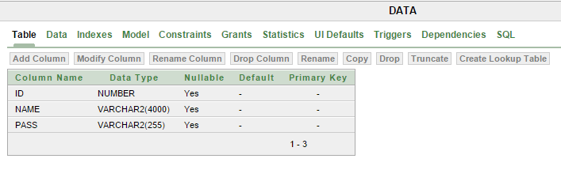
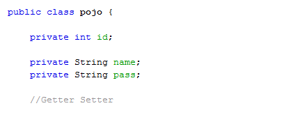
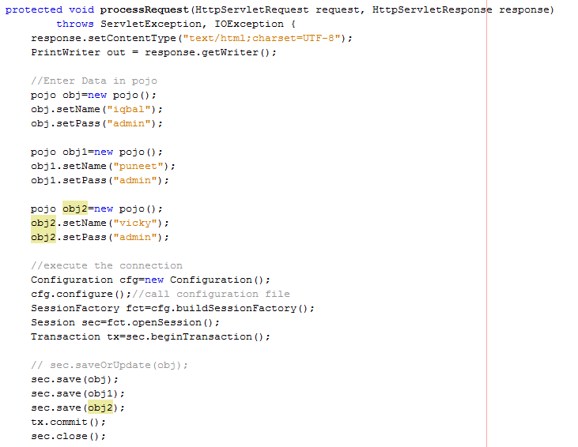
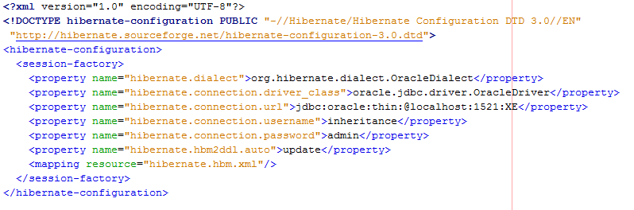
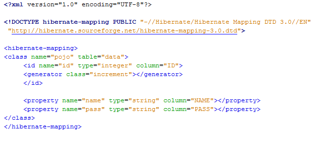
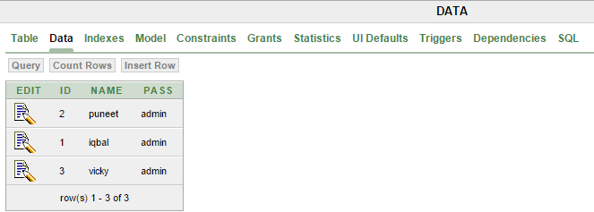

Web Application
Whether Java Application runs with the help of server or without server, or whether application is desktop or standalone but the steps are common for all cases. In order to work with hibernate no server is mandatory but we need hibernate software (.jars(s) files).
Basic Example
in Hibernate to Store Data in DataBase1.Create table in
Database with
three parameters ID, NAME and PASS.

2.Create plain old java object class, named as
pojo.java.

3.Create
Servlet that uses the methods of pojo.class.
To run the servlet class hibernate API needs to be imported which are-
i.
import org.hibernate.*;
ii.
import org.hibernate.cfg.*;
This servlet class also contains the Configuration object cfg, that is used to call configure(),
SessionFactory object fct.
The org.hibernate.SessionFactory interface provides factory method to get the object of Session.
Session object is used to open session.
The org.hibernate.Session interface provides methods to insert, update and delete the object.
A Session is used to get a physical connection with a database.

4.Among Configuration, Mapping xml files, first we need to load configuration xml, because once we load the configuration file, automatically mapping file will be loaded as we registered this mapping xml in the configuration file.
So, to load the configuration xml, we need to create object of
Configuration class, which is given in
org.hibernate.cfg.*; and we need to call
configure() method in that class, by passing xml configuration file name as parameter.
Configuration cfg=new Configuration();
cfg.configure("hibernate.cfg.xml");
Here the configuration file name is the choice of the programmer but by default it is given as "hibernate.cfg.xml". Once we write the line
cfg.configure("hibernate.cfg.xml"), configuration object cfg reads this xml file by using DOM parsers.
So, finally
i. cfg reads data from hibernate.cfg.xml.
ii. stores the data in different variables.
iii. all the created variables are grouped together to make one high level hibernate object known as SessionFactory object.
iv. Configuration class is the one that can create SessionFactory object.
SessionFactory fct=cfg.buildSessionFactory();
5. Now,
Session is an interface and
SessionImpl is the implemented class, both are specified under
org.hibernate.*;
Whenever session is opened then, internally a database connection is opened. In order to get a session or open a session, we need to call
openSession() method in SessionFactory which means SessiionFactory produces sessions.
Session sec=fct.openSession();
6. Create a logical transaction.
While working with insert, update, delete operations from hibernate application onto the database, it needs a logical transaction. In order to begin a logical transaction in hibernate we need to call a method
beginTransaction() given by Session interface.
Transaction tx=sec.beginTransaction();
sec is the object of
Session interface.
7. Following methods are given by Session interface to move the objects from application to catabase and from data base to application.
session.save(s) Inserting object 's' into database
session.update(s) Updating object 's' in the database
session.load(s) Selecting object 's' from the database
session.delete(s) Deleting object 's' from database
8.Create configuration file
hibernate.cfg.xml.
Following properties are required to configure a database
i.hibernate.dialect: contains the set of rules for database choosen.
ii.hibernate.connection.driver_class: It is the jdbc driver class.
iii.hibernate.connection.url:Provide URL to the database instance.
iv.hibernate.connection.username:Here username is specified that is linked with the specified database.
v.hibernate.connection.password:Here password of user is provided.

9.Create mapping file
hibernate.hbm.xml.
This mapping file instructs Hibernate how to map the defined class to the database table.
Details of mapping file tags:
i. hibernate-mapping is the root element which contains all the other class elements.
ii.The class element is used to define specific mapping from a Java class to the database table.
The Java class name is specified using the name attribute of the class element and the database table name is specified using the table attribute.
iii.The id element maps the unique ID attribute in class to the primary key of the database table.
iv.The
element is used to map a Java class property to a column in the database table.

Output:
The data is stored in the table.

Life Cycle
Actually POJO class object has following three states like-
* Transient state
* Persistent state
* Detached state
Transient & Persistent states:
* Whenever an object of a pojo class is created then it will be in the Transient state.
* When the object is in a Transient state it doesn't represent any row of the database, i.e. it is not associated with any Session object.
* If we modify the data of a pojo class object, when it is in transient state then it doesn't effect on the database table.
* When the object is in persistent state, then it represents one row of the database, if the object is in persistent state then it is associated with the unique Session.
* If we want to move an object from persistent to detached state, we need to do either closing that session or need to clear the cache of the session.
* If we want to move an object from persistent state into transient state then we need to delete that object permanently from the database.
public class ClientProgram {
public static void main(String[] args)
{
Configuration cfg = new Configuration();
cfg.configure("hibernate.cfg.xml");
SessionFactory factory = cfg.buildSessionFactory();
Session session = factory.openSession();
// Transient state_____start
Product p=new Product();
p.setProductId(101);
p.setProName("iPhone");
p.setPrice(25000);
// Transient state_____end
// Persistent state_____start
Transaction tx = session.beginTransaction();
session.save(p);
System.out.println("Object saved successfully.....!!");
tx.commit();
// Persistent state_____end
session.close();
factory.close();
}
1. In the above client program, line numbers 16 to 19 we just loaded the object and called the corresponding setter methods, it is not related to the database row.
2. if you see, line number 24 we called save method in the Session Interface, means the object is now having the relation with the database
3. if we want to convert the object from Transient state to Persistentstate we can do in 2 ways
* By saving that object like above
* By loading object from database
If we do any modifications all the changes will first applied to the object in session cache only (e.g. If we do the modifications 5 times, then 5 times we need to save the changes into the database, which means number of round trips from our application to database will be increased. Actually, if we load an object from the database, first it will be saved in the cache-memory. So, if we do any number of changes all will be effected at cache level only and finally we can call save or update method with a single call such that the data will be saved into the database.
If we want to save an object into database then we need to call any one of the following three methods
* save()
* persist()
* saveOrUpdate()
If we want to load an object from database, then we need to call either load() or get() method(s).
Transient:
One newly created object,with out having any relation with the database, means never persistent, not associated with any Session object
Persistent:
It has the relation with the database, associated with a unique Session object
Detached:
Previously having relation with the database [persistent ], now not associated with any Session.
TAG(S) -> hibernate example, hibernate lifecycle